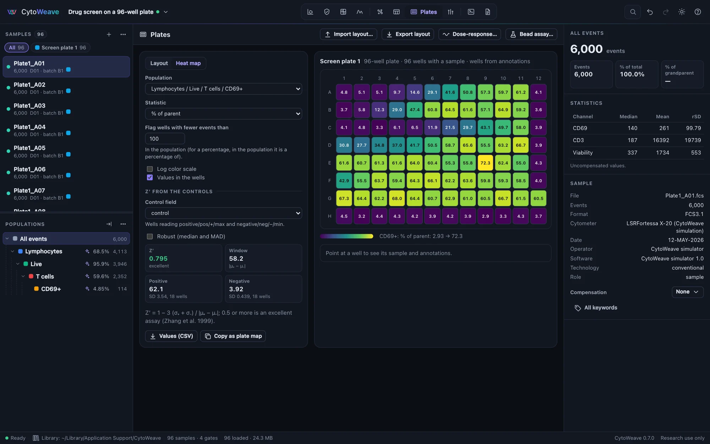
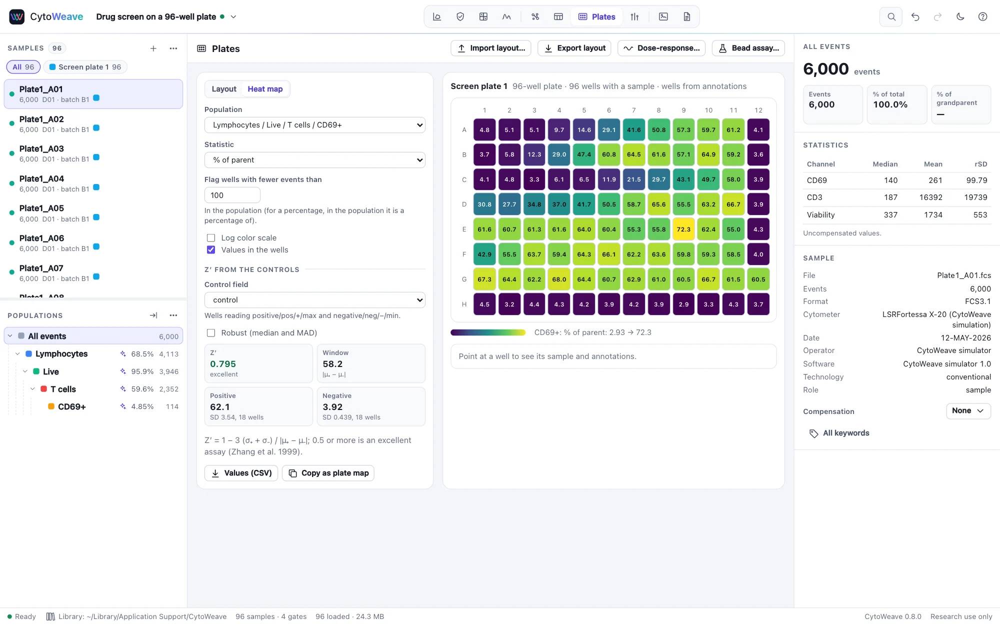
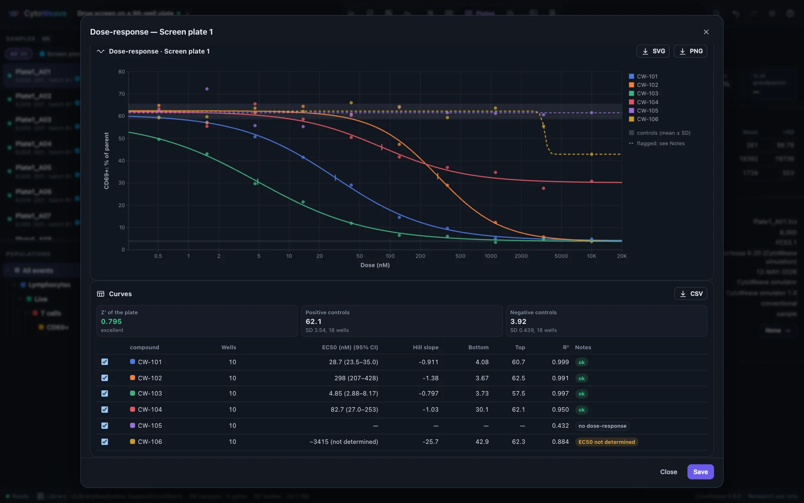
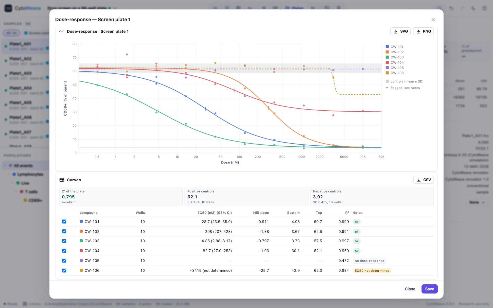
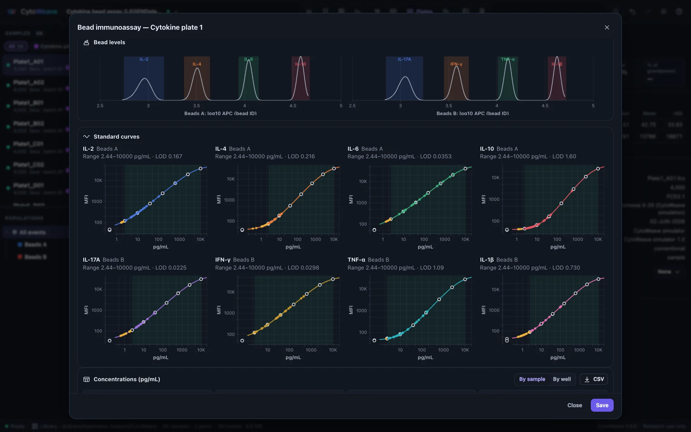
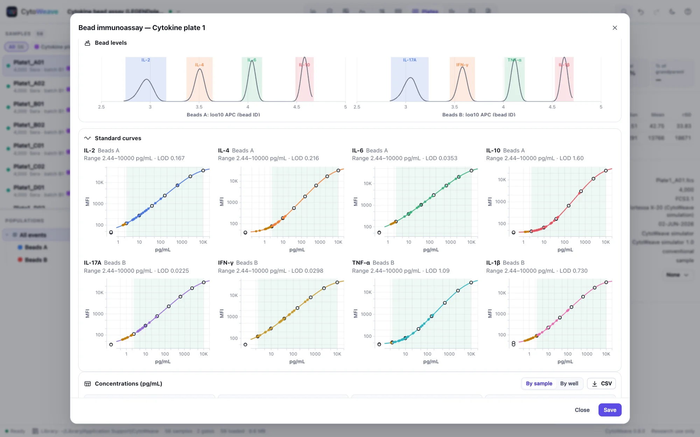

Plates, dose-response and bead assays
Samples acquired from the wells of a plate, one file per well, laid out by what each well holds; any statistic shown across the plate with the screen's Z′; dose-response curves per compound; and bead immunoassays read against their standard curves.
Wells and plates


The Plates view places each sample in its well. The well comes from, in this order:
- a
wellannotation (with an optionalplate); - the FCS file's keywords: FCS 3.1's
$WELLID,$PLATENAMEand$PLATEID, or BD'sWELL ID,PLATE NAMEandPLATE ID, as plate loaders write them; - the file name, such as
Plate1_A01.fcsor…-B7.fcs. A name counts only when one part of every unplaced name reads as a well and no two samples land in the same well, so donor IDs such as D01 are not mistaken for wells.
The plate is the smallest of 96, 384 and 1536 wells that holds them. Samples with different plate names make separate plates.
The plate layout
What each well holds (a compound and its dose, a control, a standard, a specimen and its dilution) is kept as sample annotations, so it is also available to Tables, Compare, reports and templates. In Layout:
- Select wells: click a well; shift-click for a block, ⌘ or Ctrl-click to add one; click a row letter or column number for the whole row or column, or the corner for the plate.
- Set a field to a value on the selected wells, or Clear it.
- Fill the series: a dilution series along each row (or down each column) of the selection, from a top dose divided by a factor at each step: 10000, 3333, 1111 … nM.
- Color wells by a field: categories in distinct colors, doses on a log scale.
Import layout… reads a CSV in either of two forms, and dropping such a file on the window does the same. Export layout writes the first form.
| Form | Example |
|---|---|
One row per well: a well column, an optional plate column and one column per field | well,compound,dose,controlA01,CW-101,10000 nM,A11,DMSO,,positive |
| Plate maps, as R's plater writes them (Hughes 2016): a block per field with the field's name and the column numbers, then a row per plate row | compound,1,2,3,…A,CW-101,CW-101,CW-101,…B,CW-102,CW-102,CW-102,… |
A CSV whose first column names samples is still read as sample annotations (see Opening data).
Heat maps and Z′
Heat map shows a statistic of a population for every well: a percentage, a count, or a median, mean, CV or percentile of a channel. Compute all wells reads the wells not yet loaded. Wells with fewer events than you set are hatched; for a percentage, the count is taken in the population it is a percentage of. Pointing at a well shows its sample, annotations and value, and double-clicking opens it in Gate. Values (CSV) writes one row per well, and Copy as plate map copies the grid for a spreadsheet.
With a control field (wells reading positive, pos or +, and negative, neg or −), the view gives the screen's Z′ (Zhang et al. 1999): 1 − 3 (σ₊ + σ₋) / |μ₊ − μ₋|. A Z′ of 0.5 or more is an excellent assay; below 0 the controls overlap. The robust form uses medians and 1.4826 × MAD, so a few failed wells do not drag it down.
Dose-response curves


Dose-response… fits one curve per compound (or per value of any annotation) to the statistic of each well against its dose. Doses come from an annotation such as 10 nM or 1e-6 M; units of the same kind are converted to the most common one. Control wells are left out of the curves.
- The four-parameter log-logistic curve (bottom, top, Hill slope, EC50), or the five-parameter one, which adds an asymmetry. Both use the parameterization of R's drc package (Ritz et al. 2015).
- The response: the statistic itself, % of controls (the negative controls at 0%, the positive at 100%), or % inhibition (100 minus that). Normalized curves can have their bottom and top fixed at 0% and 100%. Untick that for a partial inhibitor, which does not reach 100%.
- Weighting: none, 1/Y or 1/Y² (relative errors).
Each curve gives:
- the EC50 (an IC50 for a falling curve): the dose halfway between the zero-dose response and the other asymptote. Its 95% confidence interval, from the delta method, is symmetric on the log scale.
- the Hill slope, negative for a falling curve;
- the bottom and top, and R².
Flagged curves are drawn dashed:
- no dose-response: the curve fits no better than a flat line (F test, p ≥ 0.05);
- EC50 beyond the doses;
- EC50 not determined: its interval spans more than 100-fold.
The EC50 parameter is kept within 100-fold of the tested doses and the asymmetry between 1/20 and 20. Beyond these limits a five-parameter curve runs off to a limiting shape whose parameters mean nothing. Save keeps the table with the workspace and adds the curves to the methods paragraph.
Bead immunoassays


BioLegend LEGENDplex, BD CBA and similar kits capture each analyte on its own bead. The beads come in one or two sizes (told apart by scatter), each analyte's bead carries its own amount of a classification dye, and a reporter (usually PE) grows with the analyte's concentration. Open Bead assay… from the Plates view, or right-click the bead population.
- Bead groups: one population per bead size (for example Beads A and Beads B), each with its analytes named from the dimmest bead to the brightest. Left empty, the group gets as many analytes as its classification channel has peaks.
- Channels: the classification (bead ID) channel, for example APC, and the reporter, for example PE. Also choose the MFI: the median, or the geometric mean as beadplexr takes it.
- Standards: the annotation naming the standard wells, and how its labels read:
- levels with the highest number on top: C7 … C1, with C0 the blank, as LEGENDplex numbers them;
- levels with 1 on top: S1, S2, …;
- concentrations written out.
- Samples: the annotation whose wells are replicates (averaged, with their CV), and the one holding each sample's dilution (concentrations are multiplied by it).
The classification levels are found once, from all wells together: the highest well-separated peaks of each bead group's histogram, with the boundaries at the valleys between them. Events more than 3 robust SDs from their level's median are left out. Each analyte gets a five-parameter (or four-parameter) standard curve, weighted 1/Y² by default because the MFIs span several decades, and every other well's concentration is read off it.
- The quantifiable range runs between the lowest and highest standards whose replicates back-calculate within 20% of their concentration with a CV of at most 20% (25% for both at the two ends). These are the acceptance limits of the FDA's 2018 bioanalytical method validation guidance for ligand-binding assays.
- The limit of detection is the concentration at the blanks' mean MFI + 3 SD.
- Values outside the range are shown in amber and flagged:
< LLOQ,> ULOQ,< LOD, or below the curve's bottom.
How it was checked
The plates validation suite runs both examples against their simulated truth and against R:
- Wells and layout: wells were placed from keywords and from names alone (96 of 96), and the layout was read back from both CSV forms.
- Screen: % CD69+ in every well came within 0.5 points of the share the simulator activated. Z′ was 0.795, equal to the Z′ of the true shares.
- Dose-response: each active compound's simulated IC50 lies inside its 95% CI.
- Bead identification: 99.6% of beads were assigned to their analyte.
- Bead concentrations: sera inside the quantifiable range had a median error of 1.8%, and 97% were within 20% of their true concentration.
- drc 4.0: on 8 synthetic curves, the screen's fits and the 32 bead standard curves, CytoWeave's residual sum of squares was never above drc's own best fit, and drc's default starting values often left it at a local optimum. Started from CytoWeave's estimate, drc stays there (parameters within 1e-8), and beadplexr's concentrations agree to 1e-8. The standard errors match the exact Hessian of the residual sum of squares to 1e-5. drc's own standard errors differ by up to a few percent because they come from a coarse numerical Hessian.
- beadplexr on real data: on its own LEGENDplex data (a 13-plex, 18 files), CytoWeave's bead identification matches beadplexr's event for event on 17 files. On the 18th, beadplexr's clustering merged two analytes, and CytoWeave found all 13 there.